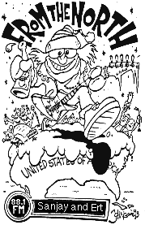

Kids in the Hall
Canadian groups in the Boston area
We've noticed that Canadian Bands often play at The Middle East and
The Paradise. One of the great things about being a fan of Canadian
Music and living in the Boston Area is that bands who play to sold out
shows of hundreds and thousands of people in Canada (i.e. Barenaked
Ladies, Moxy Fruvous, Blue Rodeo, etc.) come down here and play in
relatively small venues. (Or at least they did when KitH was on the
air!) Of course, when Sarah McLachlan and Crash Test Dummies and
Bryan Adams (who isn't Canadian anymore according to the CRTC) play in
town they still play to sold out shows in sizeable places, but many
truly wonderful bands are completely undiscovered south of the border.
And, of course, WMBR gives away tickets to these concerts on the air,
and you have a much better chance of winning them than if you were
trying to win Barenaked Ladies tickets from CHUM-FM in Toronto or
something like that.
Local concerts by Canadian artists are usually announced on the MIT
and Harvard Canadian
clubs' E-mail mailing lists as soon as someone knows about them. If
there's another mailing list that we should be announcing such things
on, you should let us know.
Some of the artists that have played in the area since Kids in the
Hall started on WMBR many years ago, some of which we got the chance
to have as guests on our show:
- The Waltons
- Sarah McLachlan
- Moxy Fruvous (Who eventually played an M.I.T. venue!)
- Barenaked Ladies
- Sloan
- Crash Test Dummies
- Tragically Hip
- Spirit of the West
- Blue Rodeo
- Pure
- The Tea Party
- Meryn Cadell
- ...and many more!!!
Image credit: Scanned from "From the North," February 1994, Sonic
Workshop, Ltd, Toronto. John Grove.
KitH on WMBR <kids@wmbr.mit.edu>